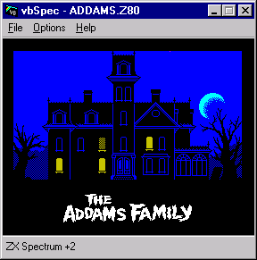
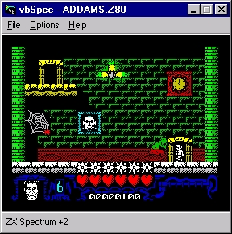
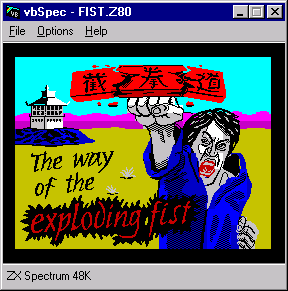
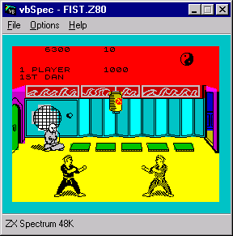

| vbSpec ZX Spectrum Emulator |
This site is sponsored by: |
| vbSpec ZX Spectrum Emulator |
This site is sponsored by: |
They said it couldn't be done! (well actually, they only said it shouldn't be done, but let's not split hairs) - a Sinclair ZX Spectrum emulator, written entirely in Visual Basic!
28th January 2003 - Version 1.70 of vbSpec
is now available!
In brief, this version can save to TAP files as well as load from them, it has
a new "Save Binary..." option, it emulates an Amiga 2-button mouse
in a Kempston Joystick port, and has some minor bug fixes and performance
optimisation.
Read the change log
for more information about what's new in v1.70
There is also a page dedicated to the additional features of the
Timex TC2048, including a couple of demos.
Read about the people who have contributed to
vbSpec.
 Frequently
Asked Questions - including: "Why on earth would anyone want to write
an emulator in Visual Basic?"
Frequently
Asked Questions - including: "Why on earth would anyone want to write
an emulator in Visual Basic?"
 Download the essential
binary files - (353KB) - If you already have the required Microsoft VB6
runtime files on your PC (MSVBVM60.DLL, COMDLG32.OCX and MSCOMCTL.OCX) then this download is
all you need to run the emulator. Use this download if you are upgrading from
an earlier version of vbSpec.
Download the essential
binary files - (353KB) - If you already have the required Microsoft VB6
runtime files on your PC (MSVBVM60.DLL, COMDLG32.OCX and MSCOMCTL.OCX) then this download is
all you need to run the emulator. Use this download if you are upgrading from
an earlier version of vbSpec.
 Download the complete
binary distribution - (2.86MB) - A complete installer that contains all of
the runtime libraries necessary to run the emulator. It has an uninstall option
too, but you won't be needing that :)
Download the complete
binary distribution - (2.86MB) - A complete installer that contains all of
the runtime libraries necessary to run the emulator. It has an uninstall option
too, but you won't be needing that :)
 Download the source
- (201KB) - Build it yourself with Visual Basic 6.
Download the source
- (201KB) - Build it yourself with Visual Basic 6.
Screenshots


The Addams Family


The Way of The Exploding Fist